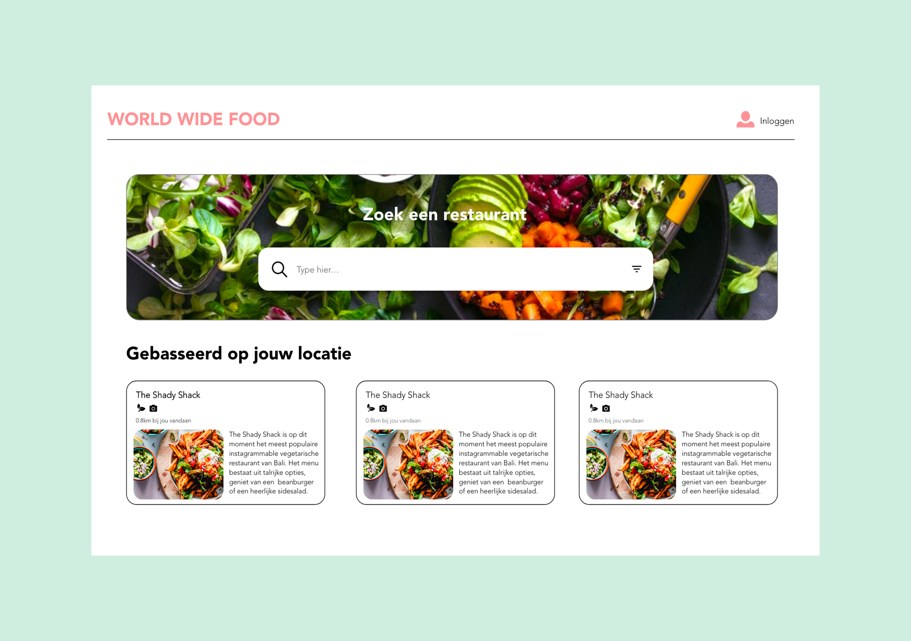

Project Web
In dit project ging je een multidevice webapplicatie maken voor reizigers. Dit gepresenteerd in een prototype dat de werking voor, tijdens en na de reis laat zien. Uiteindelijk moet het een seamless multidevice experience zijn.
Cijfer: nog onbekend
Behaalde leerdoelen
- Een interactieve, op de doelgroep afgestemde oplossing bedenken en maken
- Ontwerpkeuzes maken op basis van theorie
- Een prototype maken
- Het leren dat door iteratief te werken een ontwerp beter wordt
- Je werk presenteren in een design rationale